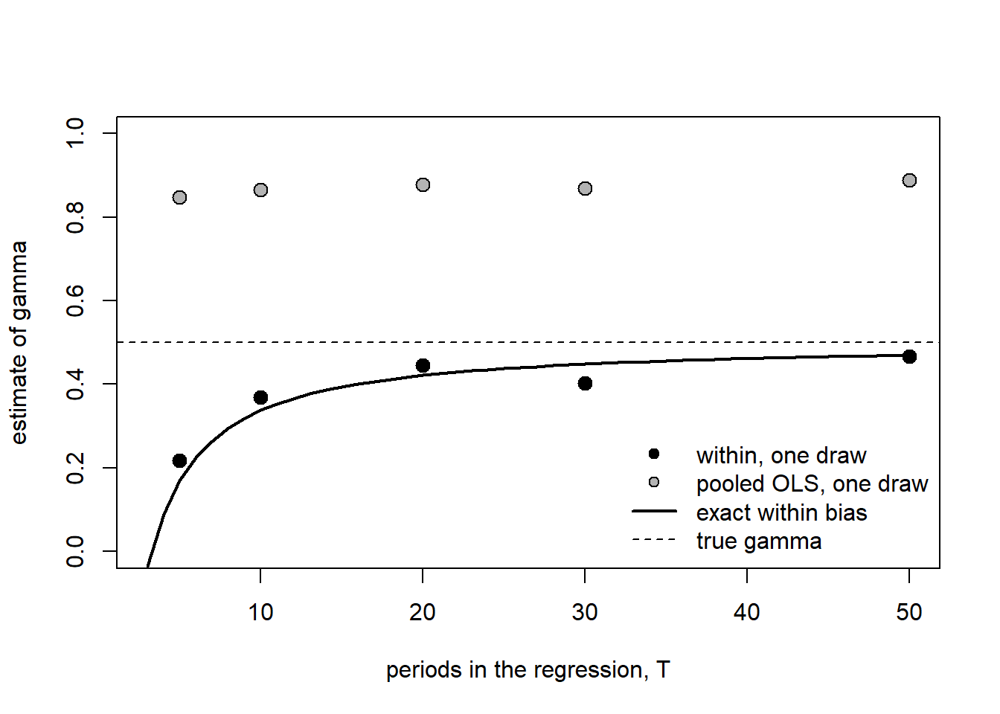
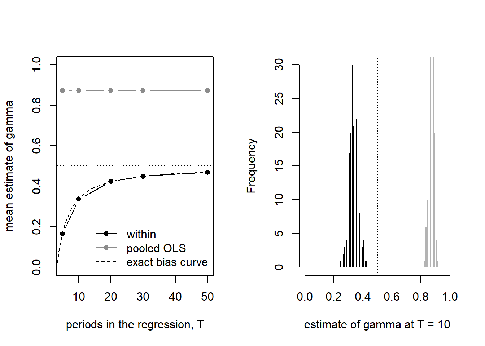
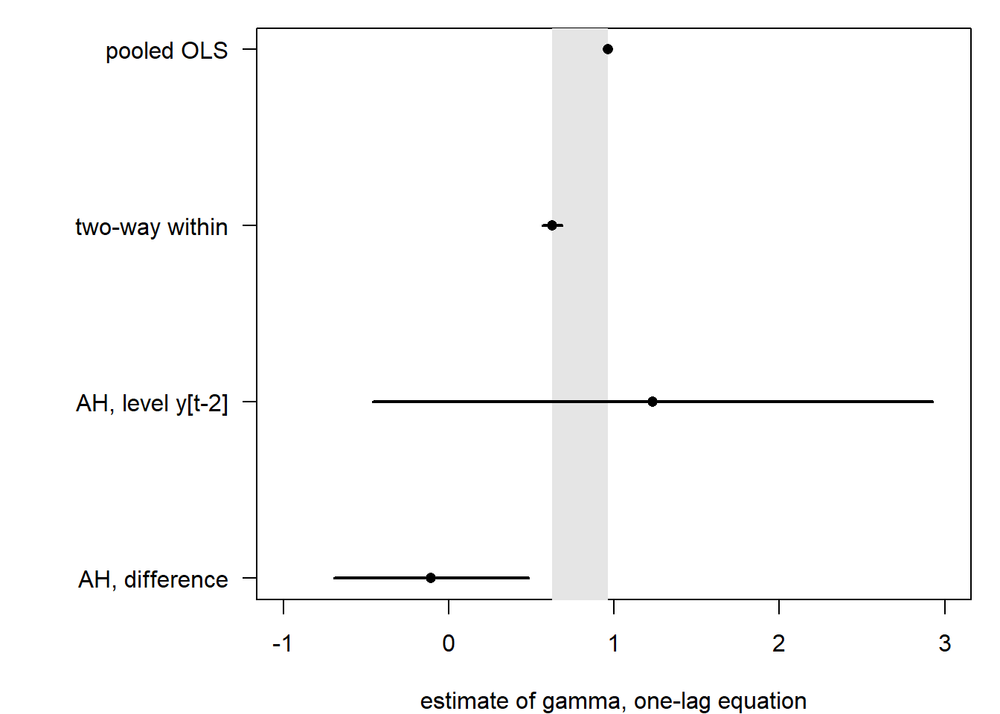

# Shared simulators live in R/; see R/simulate-panels.R.
devtools::load_all(quiet = TRUE)
# pgmm() builds a plm() call and evaluates it in the caller's environment,
# so plm must be attached; the plm:: prefix stays for the reader.
library(plm)
data("EmplUK", package = "plm")
pe <- plm::pdata.frame(EmplUK, index = c("firm", "year"))7 Dynamic panels
A firm’s payroll this year is mostly last year’s payroll. Hiring takes months of search and training, firing takes notice periods and severance, so when wages rise or demand falls, employment moves part of the way this year and the rest over the next few. The question an economist asks is “how fast?”, and the answer is one number: the coefficient on last year’s employment. At 0.5, half the gap to the new level closes each year; at 0.9, the firm is still adjusting a decade later. Every static estimator of the earlier chapters gets that number wrong, and this chapter is about how wrong and what to do instead.
A dynamic panel is a panel regression with the lagged outcome among the regressors. The lag carries the firm effect inside it, since last year’s employment was built by the same firm with the same effect, so the lag is correlated with the error. The within transformation of the core chapter, which subtracts each firm’s sample mean, removes the firm effect but puts the firm’s whole error history into every demeaned lag. The bias that results shrinks as the number of years T grows and does not shrink as the number of firms N grows (Nickell 1981; Baltagi 2021, 188).
The equation. With \(\gamma\) the persistence, \(x_{it}\) the other regressors, \(\alpha_i\) the firm effect and \(\varepsilon_{it}\) a shock that is not serially correlated,
\[ y_{it} = \gamma\, y_{i,t-1} + x_{it}'\beta + \alpha_i + \varepsilon_{it}, \qquad i = 1,\dots,N,\; t = 2,\dots,T . \]
Its pure autoregressive form, without \(x_{it}\), is the model Pesaran (2015, 678, eq. 27.5) and Baltagi (2021, 189, eq. 8.3) use to show the bias and the estimators. Taking first differences removes \(\alpha_i\):
\[ \Delta y_{it} = \gamma\, \Delta y_{i,t-1} + \Delta x_{it}'\beta + \Delta\varepsilon_{it} . \]
But \(\Delta y_{i,t-1} = y_{i,t-1} - y_{i,t-2}\) contains \(\varepsilon_{i,t-1}\), and so does \(\Delta\varepsilon_{it} = \varepsilon_{it} - \varepsilon_{i,t-1}\): the differenced lag and the differenced error share one shock, so least squares on the differenced equation is inconsistent as well (Pesaran 2015, 682). The whole chapter is about what to put in place of \(\Delta y_{i,t-1}\).
Terms from earlier chapters. Fixed effects and the within transformation are the subject of the core chapter. A series with a unit root does not return to any level (why it matters); when employment is that persistent, every estimator here is in trouble, and step 3 shows how. Serial correlation of \(\varepsilon_{it}\) is what the diagnostics of step 4 test for, and the serial-correlation tests of the core chapter are the static version of the same question.
The running example. EmplUK in plm (Croissant and Millo 2008): 140 UK firms observed for 7 to 9 years between 1976 and 1984, 1031 firm-years, with employment, the wage, capital and industry output, all in logs here. It is the data of Arellano and Bond (1991), “the benchmark data set used in Stata and EViews” (Baltagi 2021, 193), and Croissant and Millo (2019, 183) list Blundell and Bond (1998), Windmeijer (2005) and Roodman (2009b) among the papers that reuse it. Three equations on it do three jobs:
- The Arellano–Bond equation: log employment on its first two lags, the log wage and its lag, log capital, log output and its lag, with time dummies. It carries the book checks and the diagnostics.
- The one-lag equation: log employment on one lag, the log wage and log capital each with one lag, with time dummies. It carries the picture of OLS above, within below, and the consistent estimators between.
- The pure AR(1) of log employment with time dummies: the case where every estimator misleads, because the series is close to a unit root.
In this chapter.
- The bias: how far the within and OLS estimates sit from a known truth, and why only T shrinks the gap.
- Difference and instrument: one instrument per equation, the Anderson–Hsiao estimator, consistent and imprecise.
- All the instruments: difference GMM, the weak-instrument trap on a persistent series, and system GMM as the answer.
- The diagnostics that decide which fit to believe: Sargan, the two autocorrelation tests, the corrected standard errors, the instrument count.
- Summary: the recipe and one table of every estimate.
The bias, drawn. The curve is the large-N limit of the within estimate of \(\gamma = 0.5\) as a function of T, from the exact formula of step 1; the circles are one simulated panel of 100 firms at each T:
t_seq <- 3:50
set.seed(1)
one_draw <- sapply(c(5, 10, 20, 30, 50), function(t) {
d <- sim_dynamic_panel(100, t)
c(within = unname(coef(plm::plm(y ~ lag(y, 1), data = d,
model = "within"))),
ols = unname(coef(plm::plm(y ~ lag(y, 1), data = d,
model = "pooling"))[2]))
})
plot(t_seq, 0.5 + nickell_bias(0.5, t_seq), type = "l", lwd = 2,
ylim = c(0, 1), xlab = "periods in the regression, T",
ylab = "estimate of gamma")
graphics::abline(h = 0.5, lty = 2)
graphics::points(c(5, 10, 20, 30, 50), one_draw["within", ], pch = 21,
bg = "black", cex = 1.3)
graphics::points(c(5, 10, 20, 30, 50), one_draw["ols", ], pch = 21,
bg = "grey70", cex = 1.3)
graphics::legend("bottomright", c("within, one draw", "pooled OLS, one draw",
"exact within bias", "true gamma"),
pch = c(21, 21, NA, NA), pt.bg = c("black", "grey70", NA, NA),
lty = c(NA, NA, 1, 2), lwd = c(NA, NA, 2, 1), bty = "n")
nickell_bias()). Circles: one simulated draw of 100 firms at T = 5, 10, 20, 30 and 50, within (black) and pooled OLS (grey). Dashed: the true value.7.1 The bias
Question. If last year’s employment explains this year’s, how wrong is the within estimate of that persistence, and does more data fix it?
Intuition. Demeaning subtracts each firm’s average over its sample years, and that average contains every shock the firm had, including the ones that built last year’s employment. So the demeaned lag and the demeaned error are correlated through those shocks, and negatively: the within estimate of γ is too small, by about \((1 + \gamma)/(T - 1)\) (Nickell 1981; Croissant and Millo 2019, 165). The bias is of order \(1/T\), so more firms do not help and more years do (Baltagi 2021, 188; Pesaran 2015, 679). Pooled OLS without firm effects errs the other way: the firm effect sits in the error and in the lag, so γ is pushed up (Croissant and Millo 2019, 164). The truth lies between the two (Croissant and Millo 2019, 168). The random-effects estimator quasi-demeans and is biased for the same reason (Pesaran 2015, 678).
Where the bias comes from, term by term, and how GMM removes it: dynamic panel GMM.
The exact large-N bias of the within estimator in the pure AR(1) with fixed effects is (Pesaran 2015, 679, eq. 27.11; Croissant and Millo 2019, 165)
\[ \operatorname*{plim}_{N \to \infty}\left(\hat\gamma_{\text{within}} - \gamma\right) = -\frac{1 + \gamma}{T - 1}\, \frac{A}{1 - \dfrac{2\gamma A}{(1 - \gamma)(T - 1)}}, \qquad A = 1 - \frac{1 - \gamma^{T}}{T(1 - \gamma)}, \]
where T is the number of periods in the regression after the lag is taken. nickell_bias(gamma, t) in R/simulate-panels.R is this expression. The leading factor \(-(1 + \gamma)/(T - 1)\) is what the rest of the chapter means by “the Nickell bias”; Pesaran (2015, 679) writes it more compactly as \(-(1 + \gamma)/T\) plus a term of order \(T^{-2}\).
The estimators. No test here: two estimators on a known truth. Pooled OLS (plm::plm(model = "pooling")) ignores the firm effect; the within estimator (model = "within") demeans it away. Both are inconsistent for fixed T.
Run it. sim_dynamic_panel(n, t) draws \(y_{it} = 0.5\, y_{i,t-1} + \alpha_i + \varepsilon_{it}\) for n firms with \(\alpha_i \sim N(0, 1)\) and \(\varepsilon_{it} \sim N(0, 1)\), after a 50-period burn-in, and keeps t + 1 periods so that a regression on one lag uses exactly t. First one draw of 100 firms at T = 10, both estimators in the open:
set.seed(1)
d <- sim_dynamic_panel(100, 10)
plm::plm(y ~ lag(y, 1), data = d, model = "pooling")
plm::plm(y ~ lag(y, 1), data = d, model = "within")
Model Formula: y ~ lag(y, 1)
Coefficients:
(Intercept) lag(y, 1)
0.05946 0.84429
Model Formula: y ~ lag(y, 1)
Coefficients:
lag(y, 1)
0.36661 The truth is 0.5. OLS says 0.844, within says 0.367. One draw proves nothing, so repeat 200 times at five values of T, and put the exact formula beside the means:
# One replication: the two calls above, kept for their slope on the lag.
fit_both <- function(t) {
d <- sim_dynamic_panel(100, t)
within <- plm::plm(y ~ lag(y, 1), data = d, model = "within")
ols <- plm::plm(y ~ lag(y, 1), data = d, model = "pooling")
c(within = unname(coef(within)), ols = unname(coef(ols)[2]))
}
set.seed(1)
t_grid <- c(5, 10, 20, 30, 50)
draws <- lapply(t_grid, function(t) replicate(200, fit_both(t)))
grid <- data.frame(
T = t_grid,
within = sapply(draws, function(m) mean(m["within", ])),
within_sd = sapply(draws, function(m) sd(m["within", ])),
ols = sapply(draws, function(m) mean(m["ols", ])),
nickell = 0.5 + nickell_bias(0.5, t_grid),
leading = 0.5 - 1.5 / (t_grid - 1)
)
round(grid, 3) T within within_sd ols nickell leading
1 5 0.164 0.048 0.872 0.169 0.125
2 10 0.337 0.031 0.872 0.338 0.333
3 20 0.423 0.021 0.873 0.422 0.421
4 30 0.450 0.015 0.872 0.448 0.448
5 50 0.469 0.012 0.872 0.469 0.469op <- graphics::par(mfrow = c(1, 2))
plot(grid$T, grid$within, type = "b", pch = 16, ylim = c(0, 1),
xlab = "periods in the regression, T", ylab = "mean estimate of gamma")
graphics::lines(grid$T, grid$ols, type = "b", pch = 16, col = "grey55")
graphics::lines(3:50, 0.5 + nickell_bias(0.5, 3:50), lty = 2)
graphics::abline(h = 0.5, lty = 3)
graphics::legend("bottomright", c("within", "pooled OLS", "exact bias curve"),
col = c("black", "grey55", "black"), pch = c(16, 16, NA),
lty = c(1, 1, 2), bty = "n")
at10 <- draws[[2]]
bins <- seq(0, 1, by = 0.01)
graphics::hist(at10["within", ], breaks = bins, col = "black",
border = "white", xlim = c(0, 1),
xlab = "estimate of gamma at T = 10", main = "")
graphics::hist(at10["ols", ], breaks = bins, col = "grey70",
border = "white", add = TRUE)
graphics::abline(v = 0.5, lty = 3)
graphics::par(op)The same two estimators on real data, where the truth is unknown. Pooled OLS and the two-way (firm and year effects) within estimator of the effects tests, on the Arellano–Bond equation and on the one-lag equation:
ab_f <- log(emp) ~ lag(log(emp), 1:2) + lag(log(wage), 0:1) + log(capital) +
lag(log(output), 0:1)
one_f <- log(emp) ~ lag(log(emp), 1) + lag(log(wage), 0:1) +
lag(log(capital), 0:1)
ab_ols <- plm::plm(ab_f, data = pe, model = "pooling")
ab_within <- plm::plm(ab_f, data = pe, model = "within", effect = "twoways")
one_ols <- plm::plm(one_f, data = pe, model = "pooling")
one_within <- plm::plm(one_f, data = pe, model = "within", effect = "twoways")
round(coef(summary(ab_ols))[2:3, 1:2], 3)
round(coef(summary(ab_within))[1:2, 1:2], 3)
round(coef(summary(one_ols))[2, 1:2], 3)
round(coef(summary(one_within))[1, 1:2], 3) Estimate Std. Error
lag(log(emp), 1:2)1 1.143 0.034
lag(log(emp), 1:2)2 -0.195 0.032
Estimate Std. Error
lag(log(emp), 1:2)1 0.700 0.038
lag(log(emp), 1:2)2 -0.169 0.035
Estimate Std. Error
0.962 0.007
Estimate Std. Error
0.626 0.030 Read it.
- Within, on the curve. 0.164 at T = 5, 0.337 at T = 10, 0.469 at T = 50, against the exact 0.169, 0.338 and 0.469. So: the formula is the bias, and the only cure is more years: at T = 30 the estimate is still 10% below the truth.
- OLS, flat. 0.872 or 0.873 at every T. So: years do not help OLS at all; the firm effect never leaves the error, and its share of the variance sets the bias.
- The spread does not reach the truth. At T = 10 the 200 within estimates run from 0.24 to 0.43 with standard deviation 0.031; not one reaches 0.5. So: this is bias, not noise, and averaging over draws or adding firms cannot remove it.
- The real-data bracket. On the Arellano–Bond equation γ₁ is 1.143 by OLS and 0.700 within, with γ₁ + γ₂ at 0.95 and 0.53; on the one-lag equation 0.962 and 0.626. So: the persistence of employment is somewhere inside each bracket, and nothing in this step says where.
Next. Remove the firm effect by differencing instead of demeaning, and find an instrument for the differenced lag (difference and instrument).
NoteRecipe
# d: a pdata.frame with outcome y; gamma: the true persistence.
plm::plm(y ~ lag(y, 1), data = d, model = "pooling") # biased up
plm::plm(y ~ lag(y, 1), data = d, model = "within") # biased down
nickell_bias(gamma, t) # exact large-N bias of the within estimator
CautionPitfalls
Which T. The T in the formula is the number of periods in the regression, one fewer than the series has after the lag is taken. sim_dynamic_panel() keeps t + 1 periods for that reason; a first draft of this step kept t and read 0.09 at “T = 5” where the formula said 0.17.
The bias grows with γ. Judson and Owen (1999) found, in Monte Carlo at N = 20 or 100 and T up to 30, that the within bias “increases with ρ and decreases with T”, and “even for T = 30, this bias could be as much as 20% of the true value” (Baltagi 2021, 188). The 10% error at γ = 0.5, T = 30 above is the mild case.
Bias-corrected within. Kiviet (1995) derived an approximation to this bias and a within estimator that subtracts it (Baltagi 2021, 188). It needs a balanced panel and treats the other regressors as exogenous (Croissant and Millo 2019, 166). There is no R implementation in this book’s tools. Benchmark: Stata xtlsdvc, deferred.
Random effects is no escape. Quasi-demeaning introduces the same correlation of order \(1/T\), so RE is biased too (Pesaran 2015, 678).
TipBook check
Croissant and Millo (2019, 165) print the bias as −0.167 at T = 10 and γ = 0.5. That is the leading factor, −1.5/9; the full expression they print on the same page, nickell_bias(0.5, 10), gives −0.162, and the 200-draw mean above is 0.337 − 0.5 = −0.163. The structure of the table of Nickell (1981) is the nickell column of the grid; the paper itself is not in lit/, so the check is against the formula as Pesaran (2015, 679) prints it, not against the table.
The two plm::plm calls reproduce Examples 7.2 and 7.3 of Croissant and Millo (2019, 164–65) on DemocracyIncome: OLS with time effects 0.70637 (0.024293) and two-way within 0.37863 (0.03344) on lagged democracy:
data("DemocracyIncome", package = "pder")
cm_ols <- plm::plm(democracy ~ lag(democracy) + lag(income),
data = DemocracyIncome, index = c("country", "year"),
model = "within", effect = "time", subset = sample == 1)
cm_within <- update(cm_ols, effect = "twoways")
coef(summary(cm_ols))
coef(summary(cm_within)) Estimate Std. Error t-value Pr(>|t|)
lag(democracy) 0.70636982 0.024293078 29.07700 6.978578e-133
lag(income) 0.07231846 0.008342943 8.66822 1.915051e-17
Estimate Std. Error t-value Pr(>|t|)
lag(democracy) 0.37862837 0.03344426 11.3211770 1.251513e-27
lag(income) 0.01041497 0.02640112 0.3944898 6.933266e-017.2 Difference and instrument
Question. With the firm effect differenced away, what can stand in for last year’s change in employment that does not carry this year’s shock?
Intuition. Differencing removes \(\alpha_i\) but makes the lag \(\Delta y_{i,t-1}\) share \(\varepsilon_{i,t-1}\) with the error \(\Delta\varepsilon_{it}\). The level two periods back, \(y_{i,t-2}\), is correlated with \(\Delta y_{i,t-1}\), since it is half of it, and not with \(\Delta\varepsilon_{it}\), as long as the \(\varepsilon_{it}\) are not serially correlated (Anderson and Hsiao 1982; Baltagi 2021, 188; Pesaran 2015, 682). Use it as an instrument and the differenced equation can be estimated by two-stage least squares: one instrument, one equation, consistent but not efficient, because it uses one moment condition, a population average the estimator sets to zero, where many hold (Baltagi 2021, 188). The difference \(\Delta y_{i,t-2}\) is a valid instrument too, but Arellano (1989) found that version “has a singularity point and very large variances over a significant range of parameter values”, while the level “has no singularities and much smaller variances” (Baltagi 2021, 188); Croissant and Millo (2019, 167) say the level “is often a much better instrument”. The instrument weakens as γ approaches one and fails at γ = 1 (Pesaran 2015, 682).
Why the within model cannot be instrumented this way, and the orthogonal deviations alternative to differencing: dynamic panel GMM.
The estimator rests on one moment condition per equation,
\[ E\left[ y_{i,t-2}\, \Delta\varepsilon_{it} \right] = 0, \qquad t = 3, \dots, T, \]
which holds because \(y_{i,t-2}\) is built from shocks up to \(t - 2\) and \(\Delta\varepsilon_{it}\) from the shocks at \(t - 1\) and \(t\) (Pesaran 2015, 682). The first usable year is the third, since the lag costs one and the difference another (Croissant and Millo 2019, 168).
The estimator. Anderson–Hsiao (Anderson and Hsiao 1982): 2SLS on the differenced equation, with \(y_{i,t-2}\) (the level form) or \(\Delta y_{i,t-2}\) (the difference form) as the instrument for \(\Delta y_{i,t-1}\) and the differenced exogenous regressors as their own instruments. No null to reject; the question is how wide the band is.
Run it. The one-lag equation of the chapter page, differenced inside the formula, with the instruments after the |. plm::plm with a two-part formula and model = "pooling" is the form of Example 7.4 of Croissant and Millo (2019, 168); the Pitfalls box says why model = "fd" cannot be used. First the level form:
ah_level <- plm::plm(
diff(log(emp)) ~ lag(diff(log(emp))) + diff(log(wage)) +
lag(diff(log(wage))) + diff(log(capital)) + lag(diff(log(capital))) +
year - 1 |
lag(log(emp), 2) + diff(log(wage)) + lag(diff(log(wage))) +
diff(log(capital)) + lag(diff(log(capital))) + year - 1,
data = pe, model = "pooling")
coef(summary(ah_level))[1:5, ]
nobs(ah_level) Estimate Std. Error z-value Pr(>|z|)
lag(diff(log(emp))) 1.2327170 0.86293123 1.4285228 1.531414e-01
diff(log(wage)) -0.5242997 0.10463439 -5.0107781 5.421040e-07
lag(diff(log(wage))) 0.5807546 0.37306186 1.5567246 1.195359e-01
diff(log(capital)) 0.2463297 0.08951253 2.7519018 5.925028e-03
lag(diff(log(capital))) -0.2924732 0.32168573 -0.9091894 3.632502e-01
[1] 751Then the difference form, the same call with lag(diff(log(emp)), 2) as the instrument:
ah_diff <- plm::plm(
diff(log(emp)) ~ lag(diff(log(emp))) + diff(log(wage)) +
lag(diff(log(wage))) + diff(log(capital)) + lag(diff(log(capital))) +
year - 1 |
lag(diff(log(emp)), 2) + diff(log(wage)) + lag(diff(log(wage))) +
diff(log(capital)) + lag(diff(log(capital))) + year - 1,
data = pe, model = "pooling")
coef(summary(ah_diff))[1:5, ] Estimate Std. Error z-value Pr(>|z|)
lag(diff(log(emp))) -0.10541467 0.29935882 -0.3521348 7.247371e-01
diff(log(wage)) -0.46931710 0.05663636 -8.2864977 1.166320e-16
lag(diff(log(wage))) -0.03276874 0.15674440 -0.2090584 8.344026e-01
diff(log(capital)) 0.41777825 0.03961910 10.5448685 5.364786e-26
lag(diff(log(capital))) 0.20522494 0.10992106 1.8670212 6.189863e-02The Arellano–Bond equation has two lags of employment, so it needs two instruments, \(y_{i,t-2}\) and \(y_{i,t-3}\), and is exactly identified (as many instruments as endogenous regressors, none to spare):
ah_two <- plm::plm(
diff(log(emp)) ~ lag(diff(log(emp)), 1:2) + diff(log(wage)) +
lag(diff(log(wage))) + diff(log(capital)) + diff(log(output)) +
lag(diff(log(output))) + year - 1 |
lag(log(emp), 2:3) + diff(log(wage)) + lag(diff(log(wage))) +
diff(log(capital)) + diff(log(output)) + lag(diff(log(output))) +
year - 1,
data = pe, model = "pooling")
round(coef(summary(ah_two))[1:2, 1:2], 3) Estimate Std. Error
lag(diff(log(emp)), 1:2)1 11.061 58.523
lag(diff(log(emp)), 1:2)2 -2.273 12.164And the pure AR(1), the level form with nothing but time dummies beside the lag:
ah_ar1 <- plm::plm(
diff(log(emp)) ~ lag(diff(log(emp))) + year - 1 |
lag(log(emp), 2) + year - 1,
data = pe, model = "pooling")
round(coef(summary(ah_ar1))[1, 1:2], 3) Estimate Std. Error
1.178 1.226 est <- c(`pooled OLS` = coef(summary(one_ols))[2, 1],
`two-way within` = coef(summary(one_within))[1, 1],
`AH, level y[t-2]` = coef(summary(ah_level))[1, 1],
`AH, difference` = coef(summary(ah_diff))[1, 1])
se <- c(coef(summary(one_ols))[2, 2], coef(summary(one_within))[1, 2],
coef(summary(ah_level))[1, 2], coef(summary(ah_diff))[1, 2])
op <- graphics::par(mar = c(4, 9, 1, 1))
plot(est, 4:1, xlim = c(-1, 3), yaxt = "n", pch = 16, ylab = "",
xlab = "estimate of gamma, one-lag equation")
graphics::rect(est[2], 0, est[1], 5, col = "grey90", border = NA)
graphics::segments(est - 1.96 * se, 4:1, est + 1.96 * se, 4:1, lwd = 2)
graphics::points(est, 4:1, pch = 16)
graphics::axis(2, at = 4:1, labels = names(est), las = 1)
graphics::par(op)Read it.
- Level instrument. 1.23 with standard error 0.86: a band from −0.46 to 2.92. So: consistent and uninformative; the band holds the whole OLS–within bracket, and the point estimate above one means nothing.
- Difference instrument. −0.11 with standard error 0.30: a band from −0.69 to 0.48, below the bracket. So: the version Arellano warned of; a point below within and a band that crosses zero.
- Two lags, two instruments. 11.1 (58.5) and −2.3 (12.2). So: with nothing to spare, the estimator has no precision at all; this equation needs more instruments than years.
- Misleads (the pure AR(1)). 1.18 with standard error 1.23. So: a reader who prints the point reads explosive employment; the standard error says the number carries no information, and step 3 says why.
Next. There are more valid instruments than one: every earlier level is valid for every later difference (difference and system GMM).
NoteRecipe
# d: a pdata.frame; y the outcome, x an exogenous regressor; level form.
plm::plm(diff(y) ~ lag(diff(y)) + diff(x) + year - 1 |
lag(y, 2) + diff(x) + year - 1,
data = d, model = "pooling")
CautionPitfalls
model = "fd" differences the instruments too. With a two-part formula, plm::plm(model = "fd") applies the first-difference transformation to both parts, so lag(log(emp), 2) in the instrument part becomes \(\Delta y_{i,t-2}\), not the level. The only form that keeps the level is diff() inside the formula with model = "pooling", as above.
Two rows per gap. For every year a firm is missing, the differenced equation loses two observations, that year and the next (Croissant and Millo 2019, 166). The level-form fit above uses 751 firm-years of the 1031.
T must stay small relative to N. The differenced error is MA(1), a first-order moving average: each differenced error shares one shock with its neighbour. Ignoring that structure “leads to inconsistency of the IV estimator if T/N → c > 0” (Pesaran 2015, 682), a result of Alvarez and Arellano (2003) quoted there and not reproduced here.
TipBook check
Croissant and Millo (2019, 168, Example 7.4) print 0.4687 (0.1182) on the lagged difference of democracy and −0.1036 (0.3049) on the lagged difference of income for the Anderson–Hsiao estimator on DemocracyIncome; the chunk below is that call and reproduces both to the printed digits. No source on disk prints an Anderson–Hsiao estimate on EmplUK, so the four fits above have no published target.
cm_ah <- plm::plm(
diff(democracy) ~ lag(diff(democracy)) + lag(diff(income)) + year - 1 |
lag(democracy, 2) + lag(income, 2) + year - 1,
data = DemocracyIncome, index = c("country", "year"),
model = "pooling", subset = sample == 1)
coef(summary(cm_ah))[1:2, ] Estimate Std. Error z-value Pr(>|z|)
lag(diff(democracy)) 0.4686593 0.1181956 3.9651163 7.336016e-05
lag(diff(income)) -0.1035793 0.3048546 -0.3397662 7.340326e-017.3 Difference and system GMM
Question. Using every lagged level a firm offers, how persistent is employment, and when do those instruments stop carrying information?
Intuition. In the third year one level is a valid instrument, \(y_{i1}\); in the fourth, \(y_{i1}\) and \(y_{i2}\); and so on, “adding an extra valid instrument with each forward period” (Baltagi 2021, 190). The instrument matrix of a firm is block-diagonal with a block that grows by one column per period (Holtz-Eakin et al. 1988; Baltagi 2021, 190, eq. 8.6; Croissant and Millo 2019, 168, eq. 7.4). With more moment conditions than parameters, GMM picks the estimate that makes the weighted sum of squared sample moments smallest (Hansen 1982; Croissant and Millo 2019, 169). The one-step estimator weights them by the known MA(1) covariance of a differenced error (Baltagi 2021, 190, eq. 8.8; Croissant and Millo 2019, 169); the two-step estimator re-weights them by a covariance built from the one-step residuals (Baltagi 2021, 191, eq. 8.9; Croissant and Millo 2019, 171). The two are asymptotically equivalent when the shocks are homoskedastic (Baltagi 2021, 191). The trap is a persistent series: when γ is near one, \(y_{i,t-2}\) barely predicts \(\Delta y_{i,t-1}\), and the instruments are weak (Blundell and Bond 1998; Baltagi 2021, 201; Croissant and Millo 2019, 174). Blundell and Bond (1998) add the levels equation, instrumented by the lagged difference, which stays informative when the lagged levels do not (Baltagi 2021, 202): that is system GMM.
The instrument matrix, the two weighting matrices, the first-stage algebra of the weak-instrument case and the redundancy argument behind the system moments: dynamic panel GMM.
Two equations carry the step. The weak-instrument case is one first-stage regression: with T = 3 the only instrument is \(y_{i1}\), the first stage is \(\Delta y_{i2}\) on \(y_{i1}\), and its slope has the limit (Blundell and Bond 1998; Baltagi 2021, 201, eq. 8.34; Croissant and Millo 2019, 174, eq. 7.19)
\[ \operatorname{plim}\,\hat\pi = (\gamma - 1)\,\frac{c}{c + \sigma_\alpha^2 / \sigma_\varepsilon^2}, \qquad c = \frac{1 - \gamma}{1 + \gamma}, \]
which goes to zero as \(\gamma \to 1\), and also as the firm effect’s variance grows relative to the shock’s. The system estimator adds to the difference moments \(E[y_{i,t-s}\,\Delta\varepsilon_{it}] = 0\), \(s \ge 2\), the level moments
\[ E\left[\Delta y_{i,t-1}\,(\alpha_i + \varepsilon_{it})\right] = 0, \qquad t = 3, \dots, T, \]
valid when each firm’s distance from its steady state at the start of the sample is uncorrelated with its effect (Blundell and Bond 1998; Baltagi 2021, 202; Croissant and Millo 2019, 176). For T = 4 and a firm-effect variance equal to the shock variance, the asymptotic variance of difference GMM is 1.75 times that of system GMM at γ = 0, 3.26 times at γ = 0.5 and 55.4 times at γ = 0.9 (Blundell and Bond 1998; Baltagi 2021, 202).
The estimators. Difference GMM, one-step and two-step (Arellano and Bond 1991); system GMM (Arellano and Bover 1995; Blundell and Bond 1998). In plm::pgmm the formula has three parts, y ~ regressors | GMM instruments | normal instruments; lag(log(emp), 2:99) means every lag from the second; effect = "twoways" adds the time dummies as normal instruments; transformation = "ld" is the system estimator (Croissant and Millo 2019, 171, 177). Everything in the normal part defaults to the regressors not used as GMM instruments.
Run it. The Arellano–Bond equation with every lag of employment from the second as a GMM instrument. One-step first, with the robust (to heteroskedasticity and within-firm correlation) covariance of the robust errors step:
ab_g <- log(emp) ~ lag(log(emp), 1:2) + lag(log(wage), 0:1) + log(capital) +
lag(log(output), 0:1) | lag(log(emp), 2:99)
ab_one <- plm::pgmm(ab_g, data = pe, effect = "twoways", model = "onestep")
summary(ab_one, robust = TRUE)Twoways effects One-step model Difference GMM
Call:
plm::pgmm(formula = ab_g, data = pe, effect = "twoways", model = "onestep")
Unbalanced Panel: n = 140, T = 7-9, N = 1031
Number of Observations Used: 611
Residuals:
Min. 1st Qu. Median Mean 3rd Qu. Max.
-0.5911117 -0.0262899 0.0000000 -0.0000754 0.0340327 0.5811418
Coefficients:
Estimate Std. Error z-value Pr(>|z|)
lag(log(emp), 1:2)1 0.534614 0.166449 3.2119 0.0013187 **
lag(log(emp), 1:2)2 -0.075069 0.067979 -1.1043 0.2694623
lag(log(wage), 0:1)0 -0.591573 0.167884 -3.5237 0.0004256 ***
lag(log(wage), 0:1)1 0.291510 0.141058 2.0666 0.0387722 *
log(capital) 0.358502 0.053828 6.6601 2.736e-11 ***
lag(log(output), 0:1)0 0.597198 0.171933 3.4734 0.0005138 ***
lag(log(output), 0:1)1 -0.611704 0.211796 -2.8882 0.0038748 **
---
Signif. codes: 0 '***' 0.001 '**' 0.01 '*' 0.05 '.' 0.1 ' ' 1
Sargan test: chisq(25) = 44.61875 (p-value = 0.009239)
Autocorrelation test (1): normal = -2.493372 (p-value = 0.012654)
Autocorrelation test (2): normal = -0.3594476 (p-value = 0.71926)
Wald test for coefficients: chisq(7) = 219.6233 (p-value = < 2.22e-16)
Wald test for time dummies: chisq(6) = 11.45041 (p-value = 0.075414)Two-step, printed twice: with the conventional two-step covariance, which is the paper’s table, and then with the corrected one, which is the one to report. Step 4 is about the gap between them:
ab_two <- plm::pgmm(ab_g, data = pe, effect = "twoways", model = "twosteps")
summary(ab_two, robust = FALSE)
summary(ab_two, robust = TRUE)Twoways effects Two-steps model Difference GMM
Call:
plm::pgmm(formula = ab_g, data = pe, effect = "twoways", model = "twosteps")
Unbalanced Panel: n = 140, T = 7-9, N = 1031
Number of Observations Used: 611
Residuals:
Min. 1st Qu. Median Mean 3rd Qu. Max.
-0.6190677 -0.0255683 0.0000000 -0.0001339 0.0332013 0.6410272
Coefficients:
Estimate Std. Error z-value Pr(>|z|)
lag(log(emp), 1:2)1 0.474151 0.085303 5.5584 2.722e-08 ***
lag(log(emp), 1:2)2 -0.052967 0.027284 -1.9413 0.0522200 .
lag(log(wage), 0:1)0 -0.513205 0.049345 -10.4003 < 2.2e-16 ***
lag(log(wage), 0:1)1 0.224640 0.080063 2.8058 0.0050192 **
log(capital) 0.292723 0.039463 7.4177 1.191e-13 ***
lag(log(output), 0:1)0 0.609775 0.108524 5.6188 1.923e-08 ***
lag(log(output), 0:1)1 -0.446373 0.124815 -3.5763 0.0003485 ***
---
Signif. codes: 0 '***' 0.001 '**' 0.01 '*' 0.05 '.' 0.1 ' ' 1
Sargan test: chisq(25) = 30.11247 (p-value = 0.22011)
Autocorrelation test (1): normal = -2.427829 (p-value = 0.01519)
Autocorrelation test (2): normal = -0.3325401 (p-value = 0.73948)
Wald test for coefficients: chisq(7) = 371.9877 (p-value = < 2.22e-16)
Wald test for time dummies: chisq(6) = 26.9045 (p-value = 0.0001509)
Twoways effects Two-steps model Difference GMM
Call:
plm::pgmm(formula = ab_g, data = pe, effect = "twoways", model = "twosteps")
Unbalanced Panel: n = 140, T = 7-9, N = 1031
Number of Observations Used: 611
Residuals:
Min. 1st Qu. Median Mean 3rd Qu. Max.
-0.6190677 -0.0255683 0.0000000 -0.0001339 0.0332013 0.6410272
Coefficients:
Estimate Std. Error z-value Pr(>|z|)
lag(log(emp), 1:2)1 0.474151 0.185398 2.5575 0.0105437 *
lag(log(emp), 1:2)2 -0.052967 0.051749 -1.0235 0.3060506
lag(log(wage), 0:1)0 -0.513205 0.145565 -3.5256 0.0004225 ***
lag(log(wage), 0:1)1 0.224640 0.141950 1.5825 0.1135279
log(capital) 0.292723 0.062627 4.6741 2.953e-06 ***
lag(log(output), 0:1)0 0.609775 0.156263 3.9022 9.530e-05 ***
lag(log(output), 0:1)1 -0.446373 0.217302 -2.0542 0.0399605 *
---
Signif. codes: 0 '***' 0.001 '**' 0.01 '*' 0.05 '.' 0.1 ' ' 1
Sargan test: chisq(25) = 30.11247 (p-value = 0.22011)
Autocorrelation test (1): normal = -1.53845 (p-value = 0.12394)
Autocorrelation test (2): normal = -0.2796829 (p-value = 0.77972)
Wald test for coefficients: chisq(7) = 142.0353 (p-value = < 2.22e-16)
Wald test for time dummies: chisq(6) = 16.97046 (p-value = 0.0093924)The fit keeps its instrument matrix, one per firm, in W. Its column count is the number of instruments, time dummies and exogenous regressors included:
ncol(ab_two$W[[1]])
nobs(ab_two)[1] 38
[1] 611The weak-instrument case: the pure AR(1) of log employment, by OLS, within, two-step difference GMM and two-step system GMM, with a Sargan test, which asks whether the spare moment conditions hold (diagnostics), on each GMM fit:
ar1_ols <- plm::plm(log(emp) ~ lag(log(emp)), data = pe, model = "pooling")
ar1_within <- plm::plm(log(emp) ~ lag(log(emp)), data = pe,
model = "within", effect = "twoways")
ar1_dif <- plm::pgmm(log(emp) ~ lag(log(emp)) | lag(log(emp), 2:99),
data = pe, effect = "twoways", model = "twosteps")
ar1_sys <- plm::pgmm(log(emp) ~ lag(log(emp)) | lag(log(emp), 2:99),
data = pe, effect = "twoways", model = "twosteps",
transformation = "ld")
round(coef(ar1_ols)[2], 3)
round(coef(ar1_within), 3)
round(coef(summary(ar1_dif))[1, 1:2], 3)
plm::sargan(ar1_dif)
round(coef(summary(ar1_sys))[1, 1:2], 3)
plm::sargan(ar1_sys)lag(log(emp))
0.997
lag(log(emp))
0.744
Estimate Std. Error
0.310 0.162
Sargan test
data: log(emp) ~ lag(log(emp)) | lag(log(emp), 2:99)
chisq = 42.44, df = 27, p-value = 0.02977
alternative hypothesis: overidentifying restrictions not valid
Estimate Std. Error
1.090 0.039
Sargan test
data: log(emp) ~ lag(log(emp)) | lag(log(emp), 2:99)
chisq = 71.309, df = 34, p-value = 0.0001871
alternative hypothesis: overidentifying restrictions not validSystem GMM. First the one-lag equation in the form of the ?pgmm Blundell–Bond example, every lag from the second of all three variables as GMM instruments, one-step and then two-step; then the Arellano–Bond equation, one-step and two-step:
bb_g <- log(emp) ~ lag(log(emp), 1) + lag(log(wage), 0:1) +
lag(log(capital), 0:1) | lag(log(emp), 2:99) + lag(log(wage), 2:99) +
lag(log(capital), 2:99)
bb_one <- plm::pgmm(bb_g, data = pe, effect = "twoways", model = "onestep",
transformation = "ld")
summary(bb_one, robust = TRUE)
bb_two <- plm::pgmm(bb_g, data = pe, effect = "twoways", model = "twosteps",
transformation = "ld")
round(coef(summary(bb_two, robust = TRUE))[1:5, 1:2], 4)
plm::sargan(bb_two)
ab_sys1 <- plm::pgmm(ab_g, data = pe, effect = "twoways", model = "onestep",
transformation = "ld")
round(coef(summary(ab_sys1, robust = TRUE))[1:2, 1:2], 3)
ab_sys <- plm::pgmm(ab_g, data = pe, effect = "twoways", model = "twosteps",
transformation = "ld")
round(coef(summary(ab_sys, robust = TRUE))[1:7, 1:2], 3)
plm::sargan(ab_sys)
ncol(ab_sys$W[[1]])Twoways effects One-step model System GMM
Call:
plm::pgmm(formula = bb_g, data = pe, effect = "twoways", model = "onestep",
transformation = "ld")
Unbalanced Panel: n = 140, T = 7-9, N = 1031
Number of Observations Used: 1642
Residuals:
Min. 1st Qu. Median Mean 3rd Qu. Max.
-0.7530341 -0.0369030 0.0000000 0.0002882 0.0466069 0.6001503
Coefficients:
Estimate Std. Error z-value Pr(>|z|)
lag(log(emp), 1) 0.935605 0.026295 35.5810 < 2.2e-16 ***
lag(log(wage), 0:1)0 -0.630976 0.118054 -5.3448 9.050e-08 ***
lag(log(wage), 0:1)1 0.482620 0.136887 3.5257 0.0004224 ***
lag(log(capital), 0:1)0 0.483930 0.053867 8.9838 < 2.2e-16 ***
lag(log(capital), 0:1)1 -0.424393 0.058479 -7.2572 3.952e-13 ***
---
Signif. codes: 0 '***' 0.001 '**' 0.01 '*' 0.05 '.' 0.1 ' ' 1
Sargan test: chisq(100) = 118.763 (p-value = 0.097096)
Autocorrelation test (1): normal = -4.808434 (p-value = 1.5212e-06)
Autocorrelation test (2): normal = -0.2800133 (p-value = 0.77947)
Wald test for coefficients: chisq(5) = 11174.82 (p-value = < 2.22e-16)
Wald test for time dummies: chisq(7) = 14.71138 (p-value = 0.039882)
Estimate Std. Error
lag(log(emp), 1) 0.9322 0.0269
lag(log(wage), 0:1)0 -0.6345 0.1188
lag(log(wage), 0:1)1 0.4947 0.1318
lag(log(capital), 0:1)0 0.4853 0.0604
lag(log(capital), 0:1)1 -0.4232 0.0644
Sargan test
data: bb_g
chisq = 110.7, df = 100, p-value = 0.2183
alternative hypothesis: overidentifying restrictions not valid
Estimate Std. Error
lag(log(emp), 1:2)1 1.121 0.064
lag(log(emp), 1:2)2 -0.177 0.053
Estimate Std. Error
lag(log(emp), 1:2)1 1.160 0.066
lag(log(emp), 1:2)2 -0.208 0.052
lag(log(wage), 0:1)0 -0.384 0.200
lag(log(wage), 0:1)1 0.346 0.208
log(capital) 0.043 0.025
lag(log(output), 0:1)0 0.551 0.212
lag(log(output), 0:1)1 -0.550 0.215
Sargan test
data: ab_g
chisq = 57.101, df = 37, p-value = 0.01848
alternative hypothesis: overidentifying restrictions not valid
[1] 51The bracket on the one-lag equation: difference GMM, one-step and two-step, to sit beside the OLS and within fits of step 1 and the system fits above:
one_dif1 <- plm::pgmm(bb_g, data = pe, effect = "twoways", model = "onestep")
one_dif2 <- plm::pgmm(bb_g, data = pe, effect = "twoways", model = "twosteps")
round(rbind(
`pooled OLS` = coef(summary(one_ols))[2, 1:2],
`two-way within` = coef(summary(one_within))[1, 1:2],
`DIF, one-step` = coef(summary(one_dif1, robust = TRUE))[1, 1:2],
`DIF, two-step` = coef(summary(one_dif2, robust = TRUE))[1, 1:2],
`SYS, one-step` = coef(summary(bb_one, robust = TRUE))[1, 1:2],
`SYS, two-step` = coef(summary(bb_two, robust = TRUE))[1, 1:2]), 3)
plm::sargan(one_dif2)
ncol(one_dif2$W[[1]]) Estimate Std. Error
pooled OLS 0.962 0.007
two-way within 0.626 0.030
DIF, one-step 0.707 0.084
DIF, two-step 0.679 0.089
SYS, one-step 0.936 0.026
SYS, two-step 0.932 0.027
Sargan test
data: bb_g
chisq = 88.797, df = 79, p-value = 0.2113
alternative hypothesis: overidentifying restrictions not valid
[1] 91lad <- rbind(
`pooled OLS` = coef(summary(one_ols))[2, 1:2],
`SYS, one-step` = coef(summary(bb_one, robust = TRUE))[1, 1:2],
`SYS, two-step` = coef(summary(bb_two, robust = TRUE))[1, 1:2],
`DIF, one-step` = coef(summary(one_dif1, robust = TRUE))[1, 1:2],
`DIF, two-step` = coef(summary(one_dif2, robust = TRUE))[1, 1:2],
`two-way within` = coef(summary(one_within))[1, 1:2])
ah <- coef(summary(ah_level))[1, 1:2]
op <- graphics::par(mfrow = c(1, 2), mar = c(4, 7, 1, 1))
plot(lad[, 1], 6:1, xlim = c(0.4, 1.2), yaxt = "n", pch = 16, ylab = "",
xlab = "gamma, one-lag equation")
graphics::rect(ah[1] - 1.96 * ah[2], 0, ah[1] + 1.96 * ah[2], 7,
col = "grey92", border = NA)
graphics::segments(lad[, 1] - 1.96 * lad[, 2], 6:1,
lad[, 1] + 1.96 * lad[, 2], 6:1, lwd = 2)
graphics::points(lad[, 1], 6:1, pch = 16)
graphics::axis(2, at = 6:1, labels = rownames(lad), las = 1)
w <- ab_two$W[["127"]]
graphics::image(seq_len(ncol(w)), seq_len(nrow(w)),
1 * t(w != 0)[, nrow(w):1], col = c("white", "black"),
xlab = "instrument column", ylab = "", yaxt = "n")
graphics::axis(2, at = nrow(w):1, labels = rownames(w), las = 1)![Two panels. Left: a dot-and-whisker chart on a grey background with six rows. From bottom to top: pooled OLS at 0.96 with a tiny whisker, SYS two-step at 0.93 and SYS one-step at 0.94 with whiskers of about 0.05 each side, DIF two-step at 0.68 and DIF one-step at 0.71 with whiskers of about 0.17 each side, and two-way within at 0.63 with a whisker of 0.06. Right: a six-row block pattern. Row one has two black cells at the far left, row two three, up to row six with seven, forming a staircase; a block of black cells fills the rightmost columns of every row.](index_files/figure-html/c06-3-picture-1.png)
graphics::par(op)Read it.
- Two-step difference GMM, the Arellano–Bond equation. γ₁ = 0.474, γ₂ = −0.053; the wage −0.51 now and +0.22 lagged, capital 0.29, output 0.61 now and −0.45 lagged. One-step gives 0.535. So: the coefficient the help page names as the paper’s Table 4(b); the long-run persistence γ₁ + γ₂ is 0.42.
- The one-lag equation, inside the bracket. Difference GMM 0.68 to 0.71, system GMM 0.93 to 0.94, between within at 0.63 and OLS at 0.96. So: both consistent estimators land where the theory says, yet 0.25 apart, and the Sargan tests accept both (p = 0.21 and 0.22). The instruments decide, not the data.
- The Arellano–Bond equation, outside it. Difference GMM 0.47 sits below within 0.70, and system GMM 1.16 above OLS 1.14. So: the symptom of weak lagged-level instruments on a persistent series, where the level restrictions “remain informative in cases where first differenced instruments become weak” (Baltagi 2021, 202); read 0.47 as a warning, not a result, and note that the system fit’s Sargan rejects (p = 0.018) with 51 instruments.
- Misleads (the pure AR(1)). OLS 0.997, within 0.744, difference GMM 0.31 (0.16) with Sargan p = 0.030, system GMM 1.09 (0.04) with Sargan p = 0.0002. So: a series this persistent breaks the difference instruments and the system restriction alike; this is a unit-root problem, not a dynamic-panel problem (why it matters).
Next. Which of these fits can be believed: the spare moment conditions, the serial correlation of the residuals, the standard errors and the instrument count (diagnostics).
NoteRecipe
# d: a pdata.frame; plm attached, because pgmm() evaluates a plm() call.
library(plm)
f <- y ~ lag(y, 1:2) + x | lag(y, 2:99) # x exogenous, own instrument
plm::pgmm(f, data = d, effect = "twoways", model = "twosteps") # difference
plm::pgmm(f, data = d, effect = "twoways", model = "twosteps",
transformation = "ld") # system
CautionPitfalls
Defaults that differ from plm. pgmm(effect = ) defaults to "twoways" where plm defaults to "individual"; with effect = "individual" the Arellano–Bond equation gives γ₁ = 0.449 (0.183), not 0.474:
ab_ind <- plm::pgmm(ab_g, data = pe, effect = "individual",
model = "twosteps")
round(coef(summary(ab_ind, robust = TRUE))[1, 1:2], 3) Estimate Std. Error
0.449 0.183 model defaults to "onestep"; the paper’s table is "twosteps". And pgmm fails with “could not find function” unless plm is attached, because it builds and evaluates a plm() call.
Two Sargan lines on one instrument set. The one-step summary prints Sargan 44.6 (p = 0.009) and the two-step summary 30.1 (p = 0.22) for the same 38 instruments. Step 4 reads the two-step statistic, the value of the two-step objective function at the estimate (Croissant and Millo 2019, 180).
System counts are not difference counts. The system fit adds an intercept, one more period and one level moment per period, so its instrument count and Sargan degrees of freedom cannot be compared with the difference fit’s (Croissant and Millo 2019, 177, 180): 51 against 38 on the Arellano–Bond equation, 113 against 91 on the one-lag one.
System GMM has its own weak instruments. Bun and Windmeijer (2010) show the system estimator keeps a weak-instrument problem that grows with the variance ratio of the firm effect to the shock, and that its Wald tests over-reject further as that ratio grows (Baltagi 2021, 202). Hayakawa (2009) shows the other side: when the initial condition makes the series mean-nonstationary and the firm-effect variance is large, difference GMM does well and the system restriction fails (Baltagi 2021, 202–3).
Moments plm leaves out. Ahn and Schmidt (1995) derive T − 2 further nonlinear moment conditions from the same assumptions (Baltagi 2021, 189; Pesaran 2015, 685). plm does not use them; pdynmc (Fritsch et al. 2021) does. Its two-step on the ?pgmm Table 4(a2) equation equals pgmm’s, and with use.mc.nonlin = TRUE it adds the Ahn–Schmidt conditions; that fit took 2.7 minutes on this machine:
# Results hidden: pdynmc prints progress lines; the next chunk reads the fits.
ab_a2 <- plm::pgmm(log(emp) ~ lag(log(emp), 1:2) + lag(log(wage), 0:1) +
lag(log(capital), 0:2) + lag(log(output), 0:2) | lag(log(emp), 2:99),
data = pe, effect = "twoways", model = "twosteps")
data("ABdata", package = "pdynmc")
abd <- ABdata
abd[, 4:7] <- log(abd[, 4:7])
pd_two <- pdynmc::pdynmc(
dat = abd, varname.i = "firm", varname.t = "year",
use.mc.diff = TRUE, use.mc.lev = FALSE, use.mc.nonlin = FALSE,
include.y = TRUE, varname.y = "emp", lagTerms.y = 2,
fur.con = TRUE, fur.con.diff = TRUE, fur.con.lev = FALSE,
varname.reg.fur = c("wage", "capital", "output"),
lagTerms.reg.fur = c(1, 2, 2),
include.dum = TRUE, dum.diff = TRUE, dum.lev = FALSE, varname.dum = "year",
w.mat = "iid.err", std.err = "corrected", estimation = "twostep",
opt.meth = "none")
pd_nl <- pdynmc::pdynmc(
dat = abd, varname.i = "firm", varname.t = "year",
use.mc.diff = TRUE, use.mc.lev = FALSE, use.mc.nonlin = TRUE,
include.y = TRUE, varname.y = "emp", lagTerms.y = 2,
fur.con = TRUE, fur.con.diff = TRUE, fur.con.lev = FALSE,
varname.reg.fur = c("wage", "capital", "output"),
lagTerms.reg.fur = c(1, 2, 2),
include.dum = TRUE, dum.diff = TRUE, dum.lev = FALSE, varname.dum = "year",
w.mat = "iid.err", std.err = "corrected", estimation = "twostep",
opt.meth = "BFGS")round(cbind(pdynmc = coef(pd_two)[1:2], pgmm = coef(ab_a2)[1:2]), 4)
round(cbind(pdynmc = pd_two$stderr$step2[1:2],
pgmm = sqrt(diag(plm::vcovHC(ab_a2)))[1:2]), 4)
summary(pd_nl) pdynmc pgmm
L1.emp 0.6287 0.6287
L2.emp -0.0652 -0.0652
pdynmc pgmm
lag(log(emp), 1:2)1 0.1934 0.1934
lag(log(emp), 1:2)2 0.0451 0.0451
Dynamic linear panel estimation (twostep)
GMM estimation steps: 2
Coefficients:
Estimate Std.Err.rob z-value.rob Pr(>|z.rob|)
L1.emp 0.664766 0.199730 3.328 0.00087 ***
L2.emp -0.084063 0.052139 -1.612 0.10696
L0.wage -0.495533 0.153355 -3.231 0.00123 **
L1.wage 0.348865 0.208069 1.677 0.09354 .
L0.capital 0.264478 0.069361 3.813 0.00014 ***
L1.capital 0.004312 0.083721 0.052 0.95853
L2.capital -0.036024 0.041811 -0.862 0.38869
L0.output 0.561164 0.160948 3.487 0.00049 ***
L1.output -0.584716 0.253856 -2.303 0.02128 *
L2.output 0.076678 0.170967 0.448 0.65415
1979 0.005488 0.011389 0.482 0.62981
1980 0.006971 0.018630 0.374 0.70840
1981 -0.041139 0.032197 -1.278 0.20125
1982 -0.064918 0.036051 -1.801 0.07170 .
1983 -0.053726 0.038911 -1.381 0.16728
1976 -0.065573 0.035821 -1.831 0.06710 .
---
Signif. codes: 0 '***' 0.001 '**' 0.01 '*' 0.05 '.' 0.1 ' ' 1
45 total instruments are employed to estimate 16 parameters
27 linear (DIF) 4 nonlinear
8 further controls (DIF)
6 time dummies (DIF)
J-Test (overid restrictions): 40.35 with 29 DF, pvalue: 0.0784
F-Statistic (slope coeff): 243.94 with 10 DF, pvalue: <0.001
F-Statistic (time dummies): 15.68 with 6 DF, pvalue: 0.0156Linear moments only: 0.6287 (0.1934) from both packages. With the Ahn–Schmidt moments added: γ₁ = 0.665 (0.200), γ₂ = −0.084 (0.052), the wage −0.50 (0.15), capital 0.26 (0.07), and a J test (pdynmc’s name for the Sargan–Hansen statistic of step 4) of 40.35 on 29 degrees of freedom, p = 0.078. The extra moments move γ₁ up by 0.04 and do not narrow its band.
Time-invariant regressors. Differencing removes them with the firm effect. Arellano and Bover (1995) set the estimator in the Hausman–Taylor frame (Hausman and Taylor 1981), a random-effects IV estimator that uses the exogenous regressors as instruments (fixed or random), where some level instruments identify such coefficients (Baltagi 2021, 194), and Kripfganz and Schwarz (2019) give a two-step estimator for them. Neither is in this book’s tools. Benchmark: Stata xtseqreg, deferred.
TipBook check
?pgmm annotates ab.b, the two-step difference fit of the Arellano–Bond equation with robust = FALSE, as “Arellano and Bond (1991), table 4 col. b” (Arellano and Bond 1991), the table Baltagi (2021, 223) names as “Table 4 of Arellano and Bond (1991) (p. 290)”; c06-3-ab-twostep above is that call and prints 0.474151 (0.085303), −0.052967 (0.027284), −0.513205 (0.049345), 0.224640 (0.080063), 0.292723 (0.039463), 0.609775 (0.108524), −0.446373 (0.124815), Sargan 30.11 on 25 degrees of freedom. ?pgmm annotates bb.4, the one-step system fit of the one-lag equation with robust = TRUE, as “Blundell and Bond (1998) table 4 (cf. DPD for OX p. 12 col. 4)” (Blundell and Bond 1998); c06-3-sys above prints 0.935605 (0.026295). Neither paper is in lit/, so what is matched here is the help page’s annotation, not a page of the paper.
Example 7.5 of Croissant and Millo (2019, 171–72) prints 0.50499 (0.09049) for the one-step and 0.554007 (0.10783) for the two-step difference fit, and Example 7.7 (Croissant and Millo 2019, 177) prints 0.6176 (0.05714) for the two-step system fit, all on DemocracyIncome. All three reproduce to the printed digits:
cm_diff1 <- plm::pgmm(democracy ~ lag(democracy) + lag(income) |
lag(democracy, 2:99) | lag(income, 2),
data = DemocracyIncome, index = c("country", "year"),
model = "onestep", effect = "twoways",
subset = sample == 1)
cm_diff2 <- update(cm_diff1, model = "twosteps")
cm_sys2 <- plm::pgmm(democracy ~ lag(democracy) + lag(income) |
lag(democracy, 2:99) | lag(income, 2),
data = DemocracyIncome, index = c("country", "year"),
model = "twosteps", effect = "twoways",
transformation = "ld")
coef(summary(cm_diff1))
coef(summary(cm_diff2))
coef(summary(cm_sys2)) Estimate Std. Error z-value Pr(>|z|)
lag(democracy) 0.50499446 0.09049045 5.580638 2.396373e-08
lag(income) -0.09010807 0.08029127 -1.122265 2.617498e-01
Estimate Std. Error z-value Pr(>|z|)
lag(democracy) 0.554007280 0.10783032 5.13776889 2.780195e-07
lag(income) 0.001843585 0.06053787 0.03045341 9.757054e-01
Estimate Std. Error z-value Pr(>|z|)
lag(democracy) 0.6175939 0.05713917 10.808591 3.134483e-27
lag(income) 0.1199633 0.01791565 6.696003 2.141970e-117.4 Diagnostics
Question. The fit prints a Sargan test, two autocorrelation tests and two sets of standard errors: which numbers decide whether 0.47 is an estimate or an artefact?
Intuition. With J instruments and K coefficients, the estimator needs K moment conditions and has J − K to spare. The Sargan test asks whether those spare moments are also near zero at the estimate; if the instruments are valid they should be (Sargan 1958; Hansen 1982; Croissant and Millo 2019, 180; Baltagi 2021, 191). With too many of them it stops being able to tell: Bowsher (2002) found that at N = 100 and T = 15 the statistic’s Monte Carlo variance is 13.7 where the χ² says 180, so it “never rejects when T is too large for a given N” (Baltagi 2021, 192). The autocorrelation tests ask whether the original shocks are serially uncorrelated, which is what makes \(y_{i,t-2}\) a valid instrument: consistency “relies upon the fact that \(E[\Delta\nu_{it}\Delta\nu_{i,t-2}] = 0\)” (Baltagi 2021, 192). A differenced white-noise error is MA(1), so first-order correlation of the differenced residuals is expected and second-order is not: m1 should reject and m2 should not (Baltagi 2021, 192; Croissant and Millo 2019, 182). The two-step standard errors are built from a weight matrix estimated with one-step residuals and understate the variance in small samples, so Wald tests are oversized (they reject a true null more often than their nominal level); Windmeijer (2005) traced the bias to that estimation and derived the correction (Baltagi 2021, 193; Croissant and Millo 2019, 179). Finally, the instrument count is a choice. Ziliak (1997) saw an elasticity fall from 0.519 to 0.093 as the moment conditions rose from 9 to 212, with the standard error dropping from 0.36 to 0.07 (Baltagi 2021, 194); Roodman (2009a) made the case against too many instruments and collapse is the fix in software (Roodman 2009b; Baltagi 2021, 194; Croissant and Millo 2019, 173).
The Sargan statistic as the GMM objective, the \(a_l\) and \(b_l\) of the autocorrelation test, and the terms Windmeijer’s expansion adds: dynamic panel GMM.
Two statistics to read. The Sargan statistic is the two-step objective function at the estimate, with \(\hat{\Delta\varepsilon}\) the two-step residuals and \(W\) the instruments (Croissant and Millo 2019, 180; Baltagi 2021, 191):
\[ S = \left(\sum_i W_i'\hat{\Delta\varepsilon}_i\right)' \left(\sum_i W_i'\hat{\Delta\varepsilon}_i \hat{\Delta\varepsilon}_i' W_i\right)^{-1} \left(\sum_i W_i'\hat{\Delta\varepsilon}_i\right) \;\sim\; \chi^2_{J - K} . \]
The autocorrelation test of order \(l\) divides the sample covariance of the differenced residuals with their own \(l\)-th lag by a standard error that allows for the estimated coefficients (Arellano and Bond 1991; Croissant and Millo 2019, 181–82):
\[ m_l = \frac{a_l}{\sqrt{b_l}}, \qquad a_l = \frac{1}{\sqrt N}\,\hat{\Delta\varepsilon}'\hat{\Delta\varepsilon}_{-l}, \qquad m_l \sim N(0, 1) . \]
The tests. Sargan–Hansen (Sargan 1958; Hansen 1982), plm::sargan. Null: the overidentifying moment conditions hold. A rejection means at least one instrument is correlated with the differenced error. Arellano–Bond m1 and m2 (Arellano and Bond 1991), plm::mtest. Null: no serial correlation of that order in the differenced residuals. m2 rejecting means the levels error is AR(1) and the instruments from \(t - 2\) fail; m1 is expected to reject (Croissant and Millo 2019, 182). Windmeijer’s corrected covariance (Windmeijer 2005), plm::vcovHC and summary(robust = TRUE).
Run it. All on ab_two, the two-step difference fit of the Arellano–Bond equation from step 3. The Sargan test:
plm::sargan(ab_two)
Sargan test
data: ab_g
chisq = 30.112, df = 25, p-value = 0.2201
alternative hypothesis: overidentifying restrictions not validFirst-order autocorrelation, with the conventional and then the corrected covariance:
plm::mtest(ab_two, order = 1L)
plm::mtest(ab_two, order = 1L, vcov = plm::vcovHC)
Arellano-Bond autocorrelation test of degree 1
data: ab_g
normal = -2.4278, p-value = 0.01519
alternative hypothesis: autocorrelation present
Arellano-Bond autocorrelation test of degree 1, vcov: plm::vcovHC
data: ab_g
normal = -1.5385, p-value = 0.1239
alternative hypothesis: autocorrelation presentSecond order, the one that matters:
plm::mtest(ab_two, order = 2L)
plm::mtest(ab_two, order = 2L, vcov = plm::vcovHC)
Arellano-Bond autocorrelation test of degree 2
data: ab_g
normal = -0.33254, p-value = 0.7395
alternative hypothesis: autocorrelation present
Arellano-Bond autocorrelation test of degree 2, vcov: plm::vcovHC
data: ab_g
normal = -0.27968, p-value = 0.7797
alternative hypothesis: autocorrelation presentThe same pair on the one-step fit with the robust covariance, which is the form ?mtest pairs with Table 2 of Windmeijer (2005):
plm::mtest(ab_one, order = 1L, vcov = plm::vcovHC)
plm::mtest(ab_one, order = 2L, vcov = plm::vcovHC)
Arellano-Bond autocorrelation test of degree 1, vcov: plm::vcovHC
data: ab_g
normal = -2.4934, p-value = 0.01265
alternative hypothesis: autocorrelation present
Arellano-Bond autocorrelation test of degree 2, vcov: plm::vcovHC
data: ab_g
normal = -0.35945, p-value = 0.7193
alternative hypothesis: autocorrelation presentThe two standard errors side by side, the form of Example 7.8 of Croissant and Millo (2019, 179):
round(rbind(twostep = sqrt(diag(vcov(ab_two))),
windmeijer = sqrt(diag(plm::vcovHC(ab_two))))[, 1:7], 4) lag(log(emp), 1:2)1 lag(log(emp), 1:2)2 lag(log(wage), 0:1)0
twostep 0.0853 0.0273 0.0493
windmeijer 0.1854 0.0517 0.1456
lag(log(wage), 0:1)1 log(capital) lag(log(output), 0:1)0
twostep 0.0801 0.0395 0.1085
windmeijer 0.1419 0.0626 0.1563
lag(log(output), 0:1)1
twostep 0.1248
windmeijer 0.2173The instrument count. Five two-step fits of the same equation, each pgmm call written out: lags 2 to 3, 2 to 4, 2 to 6, every lag, and every lag collapsed; then one table built from the five objects:
m_23 <- plm::pgmm(log(emp) ~ lag(log(emp), 1:2) + lag(log(wage), 0:1) +
log(capital) + lag(log(output), 0:1) | lag(log(emp), 2:3),
data = pe, effect = "twoways", model = "twosteps")
m_24 <- plm::pgmm(log(emp) ~ lag(log(emp), 1:2) + lag(log(wage), 0:1) +
log(capital) + lag(log(output), 0:1) | lag(log(emp), 2:4),
data = pe, effect = "twoways", model = "twosteps")
m_26 <- plm::pgmm(log(emp) ~ lag(log(emp), 1:2) + lag(log(wage), 0:1) +
log(capital) + lag(log(output), 0:1) | lag(log(emp), 2:6),
data = pe, effect = "twoways", model = "twosteps")
m_all <- plm::pgmm(log(emp) ~ lag(log(emp), 1:2) + lag(log(wage), 0:1) +
log(capital) + lag(log(output), 0:1) | lag(log(emp), 2:99),
data = pe, effect = "twoways", model = "twosteps")
m_coll <- plm::pgmm(log(emp) ~ lag(log(emp), 1:2) + lag(log(wage), 0:1) +
log(capital) + lag(log(output), 0:1) | lag(log(emp), 2:99),
data = pe, effect = "twoways", model = "twosteps", collapse = TRUE)
fits <- list(`2:3` = m_23, `2:4` = m_24, `2:6` = m_26, `2:99` = m_all,
`2:99 collapsed` = m_coll)
# Plumbing: one row per fitted object, nothing estimated here.
count_tab <- t(sapply(fits, function(m) {
s <- plm::sargan(m)
c(instruments = ncol(m$W[[1]]),
gamma1 = unname(coef(m)[1]),
se_twostep = unname(sqrt(diag(vcov(m)))[1]),
se_windmeijer = unname(sqrt(diag(plm::vcovHC(m)))[1]),
sargan = unname(s$statistic), df = unname(s$parameter),
p = unname(s$p.value),
m2 = unname(plm::mtest(m, order = 2L, vcov = plm::vcovHC)$statistic))
}))
round(count_tab, 3) instruments gamma1 se_twostep se_windmeijer sargan df p
2:3 23 0.017 0.159 0.275 13.442 10 0.200
2:4 28 0.033 0.152 0.243 15.471 15 0.418
2:6 35 0.355 0.097 0.215 27.242 22 0.202
2:99 38 0.474 0.085 0.185 30.112 25 0.220
2:99 collapsed 18 0.854 0.264 0.562 11.627 5 0.040
m2
2:3 -0.505
2:4 -0.489
2:6 -0.177
2:99 -0.280
2:99 collapsed 0.448x <- count_tab[, "instruments"]
g <- count_tab[, "gamma1"]
op <- graphics::par(mfrow = c(1, 2))
plot(x, g, pch = 16, ylim = c(-0.6, 2.1), xlim = c(15, 42),
xlab = "instrument count", ylab = "gamma_1, two-step")
graphics::segments(x, g - 1.96 * count_tab[, "se_windmeijer"],
x, g + 1.96 * count_tab[, "se_windmeijer"], lwd = 2)
graphics::abline(h = coef(ab_within)[1], lty = 2)
graphics::abline(h = coef(ab_ols)[2], lty = 3)
graphics::text(x, g, rownames(count_tab), pos = 4, cex = 0.8)
plot(x, count_tab[, "se_twostep"], pch = 16, ylim = c(0, 0.6),
xlim = c(15, 42), xlab = "instrument count",
ylab = "standard error of gamma_1")
graphics::points(x, count_tab[, "se_windmeijer"], pch = 1)
graphics::legend("topright", c("two-step", "Windmeijer"), pch = c(16, 1),
bty = "n")![Two panels. Left: five points with vertical whiskers. At 23 and 28 instruments the point is near 0.02 with whiskers from about minus 0.5 to 0.5; at 35 it is 0.36 and at 38 it is 0.47 with whiskers of about 0.4 each side; the collapsed set at 18 instruments is at 0.85 with a whisker from minus 0.25 to 1.96. A dashed line at 0.70 and a dotted line at 1.14 cross the panel. Right: filled points fall from 0.16 at 23 instruments to 0.085 at 38, with 0.26 at the collapsed 18; open points stay between 0.19 and 0.28, with 0.56 at the collapsed 18.](index_files/figure-html/c06-4-picture-1.png)
graphics::par(op)Read it.
- Sargan does not reject. 30.1 on 25 degrees of freedom, p = 0.22. So: the 25 spare moment conditions are consistent with the 13 the estimate used; the instruments pass the test they can be given.
- m1 rejects, m2 does not. m1 = −2.43 (p = 0.015), m2 = −0.33 (p = 0.74). So: the pattern a valid differenced model shows; the levels shocks look serially uncorrelated and \(y_{i,t-2}\) stays a valid instrument. With the corrected covariance m1 is −1.54 (p = 0.12) and m2 −0.28 (p = 0.78); on the one-step fit the robust pair is −2.49 and −0.36. The m2 verdict is the same in every version.
- Windmeijer more than doubles the standard error. The standard error of γ₁ goes from 0.085 to 0.185, and two coefficients lose their stars: γ₂ (p from 0.05 to 0.31) and the lagged wage (0.005 to 0.11). So: the conventional two-step standard errors are not the ones to report.
- The instrument count moves γ₁ across the whole bracket. 0.02 with 23 instruments, 0.36 with 35, 0.47 with 38, 0.85 with the 18 collapsed ones, and Sargan accepts the first four alike (p from 0.20 to 0.42); the only set it questions is the collapsed one (p = 0.04), which also has the widest band. As instruments are added the two-step standard error halves, 0.159 to 0.085, while the corrected one falls by a third, 0.275 to 0.185. So: the Ziliak and Bowsher points at once; a Sargan p-value cannot pick the instrument set, so the set is a choice to report.
- Misleads (a p-value near one). With many instruments and few units a Sargan p-value near 1 is the Bowsher pathology, not a clean bill: Croissant and Millo (2019, 181) show p = 0.919 with every lag on 25 countries over seven periods, against 0.071 for their three-lag fit
diff25lim, which their code runs onDemocracyIncome(Croissant and Millo 2019, 173). So: report the count beside the p-value, and rerun with fewer lags before trusting either.
Next. Report the two-step estimate with Windmeijer standard errors, the Sargan statistic with its degrees of freedom, m1 and m2, and the instrument count, and show how γ moves across instrument sets (summary).
NoteRecipe
# m: a two-step pgmm fit.
plm::sargan(m)
plm::mtest(m, order = 1L, vcov = plm::vcovHC)
plm::mtest(m, order = 2L, vcov = plm::vcovHC)
summary(m, robust = TRUE) # Windmeijer standard errors
ncol(m$W[[1]]) # instrument count
update(m, collapse = TRUE) # the same with collapsed instruments
CautionPitfalls
mtest on a two-step fit uses one-step residuals. The help page says so, and it is what DPD, Arellano and Bond’s own program, and Stata’s xtabond do. On the ?pgmm Table 4(a2) equation this gives m2 = −0.416 where the help page says the paper prints −0.434; with vcov = plm::vcovHC it is −0.352:
plm::mtest(ab_a2, order = 2L)
plm::mtest(ab_a2, order = 2L, vcov = plm::vcovHC)
Arellano-Bond autocorrelation test of degree 2
data: log(emp) ~ lag(log(emp), 1:2) + lag(log(wage), 0:1) + lag(log(capital), ...
normal = -0.41575, p-value = 0.6776
alternative hypothesis: autocorrelation present
Arellano-Bond autocorrelation test of degree 2, vcov: plm::vcovHC
data: log(emp) ~ lag(log(emp), 1:2) + lag(log(wage), 0:1) + lag(log(capital), ...
normal = -0.35166, p-value = 0.7251
alternative hypothesis: autocorrelation presentsargan(weights = "onestep") is a different statistic. On the same two-step fit it gives 79.5 instead of 30.1 and is not the one to report:
plm::sargan(ab_two, weights = "onestep")
Sargan test
data: ab_g
chisq = 79.479, df = 25, p-value = 1.377e-07
alternative hypothesis: overidentifying restrictions not validThe summary’s AR lines follow its robust argument. summary(ab_two, robust = FALSE) prints m1 = −2.43 and robust = TRUE prints −1.54; the Sargan line does not change.
Wald tests on two-step fits over-reject. Bond et al. (2001) suggest criterion-based tests, the difference of the Sargan statistics of the restricted and unrestricted fits, in place of Wald tests (Baltagi 2021, 193). Not implemented here.
Sargan’s power can be bad. On his own cigarette example at N = 46 and T = 28, Baltagi (2021, 209) reads a non-rejection as possibly “due to the bad power of this test” and collapses the instruments.
TipBook check
?mtest annotates ab.b.onestep with vcov = vcovHC as “Windmeijer (2005), table 2, onestep with corrected std. err” (Windmeijer 2005); c06-4-mtest-onestep above is that pair and prints m1 = −2.4934 (p = 0.013) and m2 = −0.3594 (p = 0.719). ?pgmm annotates ab.b also as “Windmeijer (2005), table 2, std. err” (Windmeijer 2005) and summary(ab.b, robust = TRUE) as “Windmeijer”; c06-3-ab-twostep with robust = TRUE prints those standard errors, 0.185398 on γ₁ and the rest of the row, and c06-4-windmeijer above repeats the row to four digits. The paper is not in lit/, so the match is to the help-page annotation. Ziliak’s 0.519 → 0.093 (Ziliak 1997; Baltagi 2021, 194) and Bowsher’s variance of 13.7 against 180 (Bowsher 2002; Baltagi 2021, 192) are quoted; the count table above reproduces the structure of both, γ₁ from 0.02 to 0.85 across sets with Sargan p from 0.20 to 0.42, not their numbers.
On DemocracyIncome, Croissant and Millo (2019) print standard errors 0.04795 and 0.04646 from vcov against 0.10783 and 0.06054 from vcovHC in Example 7.8 (Croissant and Millo 2019, 179); Sargan “chisq = 50, df = 44, p-value = 0.3” for the difference fit and “56, 54, 0.4” for the system fit in Example 7.9 (Croissant and Millo 2019, 180); m2 “normal = 0.88, p-value = 0.4” in Example 7.10 (Croissant and Millo 2019, 182); and on DemocracyIncome25 a Sargan p-value of 0.91890 with every lag (Croissant and Millo 2019, 181). Here: 49.881 (44) p = 0.251, 55.678 (54) p = 0.411, 0.88094 p = 0.378 and 0.9189, all within the rounding CM print.
sqrt(diag(vcov(cm_diff2)))[1:2]
sqrt(diag(plm::vcovHC(cm_diff2)))[1:2]
plm::sargan(cm_diff2)
plm::sargan(cm_sys2)
plm::mtest(cm_diff2, order = 2)
data("DemocracyIncome25", package = "pder")
d25 <- plm::pgmm(democracy ~ lag(democracy) + lag(income) |
lag(democracy, 2:99) + lag(income, 2:99),
data = DemocracyIncome25, model = "twosteps")
plm::sargan(d25)$p.valuelag(democracy) lag(income)
0.04794953 0.04645903
lag(democracy) lag(income)
0.10783032 0.06053787
Sargan test
data: democracy ~ lag(democracy) + lag(income) | lag(democracy, 2:99) | ...
chisq = 49.881, df = 44, p-value = 0.251
alternative hypothesis: overidentifying restrictions not valid
Sargan test
data: democracy ~ lag(democracy) + lag(income) | lag(democracy, 2:99) | ...
chisq = 55.678, df = 54, p-value = 0.4114
alternative hypothesis: overidentifying restrictions not valid
Arellano-Bond autocorrelation test of degree 2
data: democracy ~ lag(democracy) + lag(income) | lag(democracy, 2:99) | ...
normal = 0.88094, p-value = 0.3784
alternative hypothesis: autocorrelation present
chisq
0.9189007 7.5 Summary
The recipe, in five lines.
- Difference, do not demean. The within estimator is biased by about \((1 + \gamma)/(T - 1)\) and more firms do not help (Nickell 1981; Croissant and Millo 2019, 165; Baltagi 2021, 188) (the bias).
- Instrument the differenced lag with levels. \(y_{i,t-2}\) and earlier are valid when the shocks are serially uncorrelated (Anderson and Hsiao 1982; Baltagi 2021, 188) (difference and instrument).
- Use every lag, but count them. Difference GMM with all lags, system GMM when the series is persistent, and the instrument count printed beside every estimate (difference and system GMM).
- Two-step with Windmeijer standard errors.
summary(robust = TRUE), never the conventional two-step covariance. - Sargan, m1, m2 and an instrument-count table. m1 must reject, m2 must not, Sargan must not (Baltagi 2021, 192); then show how γ moves as the lags change (diagnostics).
Every estimate of the persistence of employment in this chapter, on the one-lag equation and on the Arellano–Bond equation. The standard error is the one each step reported: conventional for OLS, within and Anderson–Hsiao, robust for one-step GMM, Windmeijer for two-step GMM. The Sargan p-value is given for the two-step fits, whose statistic is the one Croissant and Millo (2019, 180) describe; the instrument count includes the time dummies and the exogenous regressors.
# Plumbing: one row per fitted object from the steps above.
row_plm <- function(m, i) {
c(coef(summary(m))[i, 1:2], sargan_p = NA, instruments = NA)
}
row_gmm <- function(m, sargan = TRUE) {
c(coef(summary(m, robust = TRUE))[1, 1:2],
sargan_p = if (sargan) unname(plm::sargan(m)$p.value) else NA,
instruments = ncol(m$W[[1]]))
}
summary_tab <- rbind(
`one-lag: pooled OLS` = row_plm(one_ols, 2),
`one-lag: two-way within` = row_plm(one_within, 1),
`one-lag: Anderson-Hsiao, level` = row_plm(ah_level, 1),
`one-lag: DIF one-step` = row_gmm(one_dif1, sargan = FALSE),
`one-lag: DIF two-step` = row_gmm(one_dif2),
`one-lag: SYS one-step` = row_gmm(bb_one, sargan = FALSE),
`one-lag: SYS two-step` = row_gmm(bb_two),
`AB: pooled OLS` = row_plm(ab_ols, 2),
`AB: two-way within` = row_plm(ab_within, 1),
`AB: Anderson-Hsiao, levels` = row_plm(ah_two, 1),
`AB: DIF one-step` = row_gmm(ab_one, sargan = FALSE),
`AB: DIF two-step` = row_gmm(ab_two),
`AB: SYS one-step` = row_gmm(ab_sys1, sargan = FALSE),
`AB: SYS two-step` = row_gmm(ab_sys))
round(summary_tab, 3) Estimate Std. Error sargan_p instruments
one-lag: pooled OLS 0.962 0.007 NA NA
one-lag: two-way within 0.626 0.030 NA NA
one-lag: Anderson-Hsiao, level 1.233 0.863 NA NA
one-lag: DIF one-step 0.707 0.084 NA 91
one-lag: DIF two-step 0.679 0.089 0.211 91
one-lag: SYS one-step 0.936 0.026 NA 113
one-lag: SYS two-step 0.932 0.027 0.218 113
AB: pooled OLS 1.143 0.034 NA NA
AB: two-way within 0.700 0.038 NA NA
AB: Anderson-Hsiao, levels 11.061 58.523 NA NA
AB: DIF one-step 0.535 0.166 NA 38
AB: DIF two-step 0.474 0.185 0.220 38
AB: SYS one-step 1.121 0.064 NA 51
AB: SYS two-step 1.160 0.066 0.018 51On the one-lag equation the consistent estimators sit inside the 0.63 to 0.96 bracket and disagree with each other by a quarter: 0.68 to 0.71 for difference GMM, 0.93 to 0.94 for system GMM, both with a Sargan p-value above 0.2. On the Arellano–Bond equation γ₁ runs from 0.47 to 1.16 across the GMM fits, and the system fit’s Sargan rejects. What the chapter can say about employment persistence in these firms is the table, not one number from it.
Limitations. Each of these has no implementation in this book’s tools and is a stated gap, with the nearest Stata benchmark named.
- Kiviet’s bias-corrected within estimator (Kiviet 1995; Baltagi 2021, 188). Benchmark: Stata
xtlsdvc, deferred. - The transformed likelihood of Hsiao et al. (2002) for short panels, which differences the fixed effect away and models the initial condition (Pesaran 2015, 692–93). Benchmark: Stata
xtdpdqml(Kripfganz 2016), deferred. - The two-step estimator of Kripfganz and Schwarz (2019) for time-invariant regressors, and the Arellano–Bover system in its Hausman–Taylor form (Arellano and Bover 1995; Baltagi 2021, 194). Benchmark: Stata
xtseqreg, deferred. - The Ahn–Schmidt nonlinear moment conditions (Ahn and Schmidt 1995; Pesaran 2015, 685): not in
plm; pdynmc (Fritsch et al. 2021) runs them, shown in the Pitfalls box of step 3. - Dynamic panels with a factor error structure, where cross-sectional dependence makes the GMM estimators above inconsistent (Pesaran 2015, 696): no tool here; the CD test says whether the problem is present.
- The dynamic spatial panel, with a time lag and a spatial lag together, stated as a limitation in the spatial chapter. Benchmark: Stata
xsmle, model(sdpd), deferred.
Next. Back to the road map for the next question in the workflow. Everything in this chapter assumes the levels shocks are serially uncorrelated; the serial-correlation tests of the core chapter are where that assumption is checked on a static model, and m2 is where it is checked here.